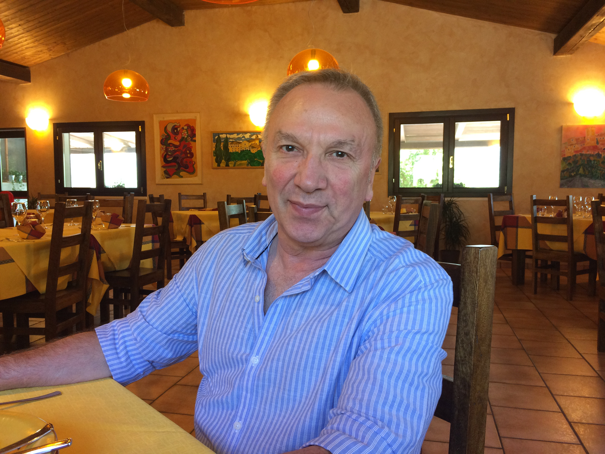

On March 1, 2022, we said goodbye to our beloved Jamil. In his passing, we lost a vibrant soul who was full of joie de vivre.
Jamil had an admirable work ethic, often times effortlessly clocking in twelve hour days. His sense of responsibility to his clients (both as an accountant in Italy and later as an immigration consultant in Canada) was exceptional.
Despite this, he was known by all of his friends for his good humour. He never passed an opportunity to crack a joke and perpetually exuded positive energy and optimism.
Music was a big part of Jamil's life. He started playing the guitar in his teens and continued to play the guitar for decades thereafter. Though he got his start in classic rock, he grew to enjoy a variety of music genres.
We would be remiss if we did not mention Jamil's love for the finer things in life! He adored good food--especially Italian cuisine. Indeed, those fortunate enough to have tasted Jamil's pasta can attest to his adoration of it. In addition to good food, he enjoyed fine clothes and always dressed to impress.
Lastly, it goes without saying that Jamil had an immense capacity for love. It often seemed that he loved his wife, son, family, and friends twice as intensely as the rest of us are able to love.
This is a space to celebrate his life and remember him fondly through pictures and video and stories. We invite you to contribute your own pictures, videos, and stories so those who love Jamil may use this space to reminisce.
We love and miss you, Jamil. We will never forget you. May you rest in peace.
Jamil was born on August 27, 1952 in Tehran, Iran. He was the youngest of three children to Abolhassan Azimzadeh and Shokat Boulourchian. His father, Abolhassan, was a telecommunications engineer for the Imperial Iranian Army. His mother, Shokat, was a loving homemaker who raised both him and his siblings, Jalil and Shala. Jamil attended Hadaf Highschool specializing in mathematics and physics. He later attended Madreseh Aali Karaj [Excellent School of Karaj] and obtained a Bachelor's degree in economics. In May of 1974, he married Shahrzad Naghdi.
Jamil moved to Genoa, Italy in 1976. He began learning Italian and enrolled in the University of Genoa. He moved to Rome in 1978. Shortly thereafter, his wife Shahrzad joined him there. He then transferred to the Sapienza University of Rome to study economics and commerce and graduated with a doctorate in 1983. In 1984, he founded ECOD, an accounting firm. He found great success in this venture. In 1988, Jamil and Shahrzad had a son, Parsiad. One of Jamil's greatest joys in life was raising Parsiad.
The family moved to Vancouver, Canada in 1996. In 1998, Jamil founded two businesses: Vogue Esthetics College and Canada Immigration Practices (CIP). Vogue Esthetics College helped hundreds of ambitious young adults establish fruitful careers in the beauty industry. CIP assisted refugees, skilled workers, investors, entrepreneurs, and persons who are self-employed obtain visas and establish residency in Canada. Jamil helped hundreds of Iranian families establish a better future for themselves in Canada.
Please add your photos and videos of Jamil to the Google Photos album. We would love to see them! Alternatively, please send them in an email instead.
Please share your stories about Jamil with us below by leaving a comment. We would love to hear them! Alternatively, please send them in an email instead.
If you are looking for a way to express your condolences, please consider making a donation to a charity of your choice in your own name, Jamil's name, or anonymously. Upon making a donation, please send an email including all details you would like displayed here.
A virtual celebration of life was held on March 26, 2022. A password-protected video is available for download. Please send an email if you would like to obtain the password.
Please send an email if you have questions.